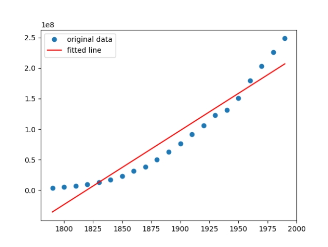
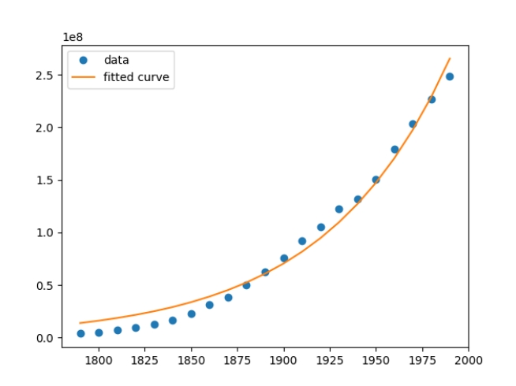
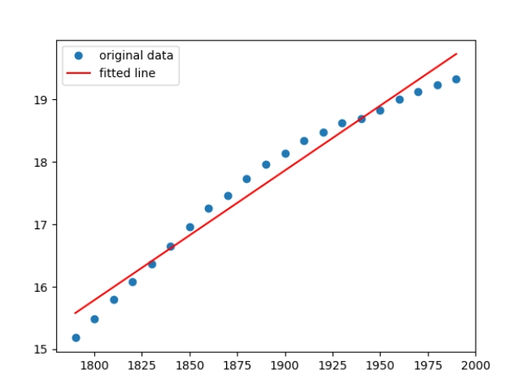
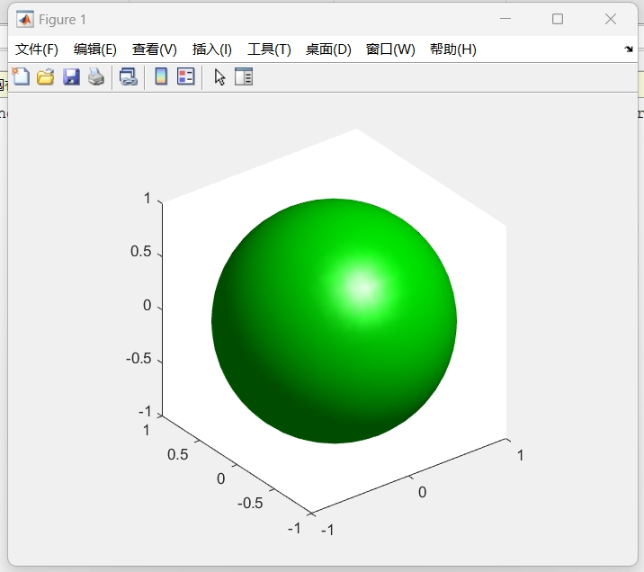
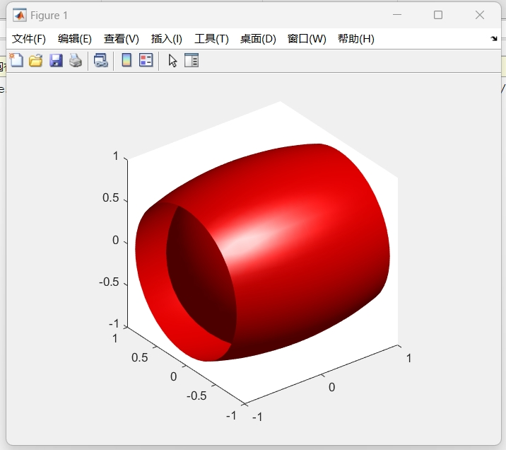
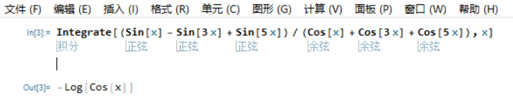

21307130331 柳睿洋
import numpy as np
from scipy import *
import matplotlib.pyplot as plt
# 第一题
x, y = np.loadtxt('uspop.txt', delimiter=' ', usecols=(0, 1), unpack=True)
# 第二题
def linregeress(x, y):
res = stats.linregress(x, y)
def fun(x): # 拟合后的线性函数
return res.intercept + res.slope * x
plt.plot(x, y, 'o', label='original data') # 原数据标点
plt.plot(x, fun(x), 'r', label='fitted line') # 拟合直线
plt.legend()
plt.show()
linregeress(x, y) # 第二题调试
# 第三题
def curve_fit(xdata, ydata):
def func(x, a, c):
return a * np.exp(c * x)
popt = optimize.curve_fit(func, xdata, ydata, bounds=(-10, 10)) # 拟合方程，参数包括func，xdata，ydata，
# plot出拟合曲线，其中的y使用拟合方程和xdata求出
plt.plot(xdata, ydata, 'o', label='data')
plt.plot(xdata, func(xdata, popt[0][0], popt[0][1]), label='fitted curve')
plt.legend()
plt.show()
curve_fit(x, y)
# 第四题
# 取自然对数即得到近似线性关系
linregeress(x, np.log(y))
测试结果：



% 第一题
[x,y,z]=meshgrid(-1:0.1:1); isosurface(x,y,z,x.^2+y.^2+z.^2-1,0); axis equal; colormap ([0 1 0])
% 第二题
[x,y,z] = meshgrid(-1:0.1:1,-1:0.1:1,-1:0.1:1); a = 2; b = 1; V = (x.^2/a^2 + y.^2/b^2 + z.^2/b^2); isosurface(x,y,z,V,1); axis equal; colormap([1 0 0])
测试结果：


Integrate[(Sin[x] - Sin[3 x] + Sin[5 x])/(Cos[x] + Cos[3 x] + Cos[5 x]), x]
测试结果：

The Lorenz attractor is an attractor that arises in a simplified system of equations describing the two-dimensional flow of fluid. In the early 1960s, Lorenz accidentally discovered the chaotic behavior of this system when he found that, for a simplified system, periodic solutions of the form
grew for Rayleigh numbers larger than the critical value, . Furthermore, vastly different results were obtained for very small changes in the initial values, representing one of the earliest discoveries of the so-called butterfly effect.
Lorenz obtained the simplified equations
now known as the Lorenz equations.